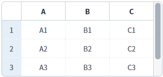
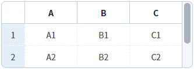
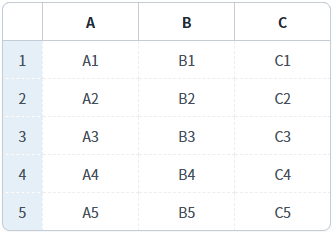
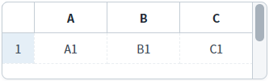
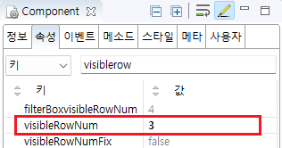

GridView에 보여질 행의 개수를 설정하는 예제입니다. 이 기능은 아래의 속성과 메소드를 사용하여 구현되었습니다.
visibleRowNum : (속성) 화면에 표현할 행의 개수.
setVisibleRowNum : (메소드) 속성 visibleRowNum을 스크립트로 설정.
보여질 행의 수 설정하기
보여질 행의 수 설정 안함
예제 영역 '보여질 행의 수 설정'에 구성된 GridView에서 테스트합니다.1
STEP 1: 초기 상태 확인하기
GridView에 보여지는 행의 수는 3개입니다.
Image 1.브라우저(Chrome) 실행 예시

2
STEP 2: 보여지는 행의 수를 2개로 변경합니다.
버튼 '보여지는 행을 2개로 설정하기'를 클릭합니다.
3
STEP 3: 실행 결과를 확인합니다.
GridView에 보여지는 행이 2개로 변경됩니다.
Image 2.브라우저(Chrome) 실행 예시

4
STEP 4: 보여지는 행의 수를 전체로 변경합니다.
버튼 '보여지는 행을 전체로 설정하기'를 클릭합니다.
5
STEP 5: 실행 결과를 확인합니다.
GridView에 보여지는 행이 전체로 변경됩니다. 세로 스크롤이 생성되지 않습니다.
Image 3.브라우저(Chrome) 실행 예시

예제 영역 '(기본 설정) 보여질 행의 수 설정 안함'에 구성된 GridView에서 테스트합니다.1
STEP 1: 실행된 결과를 확인합니다.
GridView에 설정된 높이 100px에 출력될 수 있는 최대의 행이 표시됩니다.
1개의 행이 표시되고 남은 여백은 공백으로 표시됩니다.
Image 4.브라우저(Chrome) 실행 예시

GridView의 속성을 정의합니다.
[필수] visibleRowNum="설정 값" //화면에 보여질 행의 수
예시1) visibleRowNum="3" //화면에 보여질 행의 수를 3개로 설정
Image 5.웹스퀘어 스튜디오의 Component View - 속성 설정 예시

Example 1.Source
<!-- gridView 의 소스 본문 예시 --> <w2:gridView visibleRowNum="3> <!-- 중략 --> </w2:gridView>
1
스크립트를 작성합니다.
GridView의 메소드 'setVisibleRowNum'을 사용합니다.
Example 2.Script
//예제 파일의 스크립트 "scwin.btn_ex1_onclick" 또는 "scwin.btn_ex2_onclick"를 참고하세요. //GridView 'grd_exam1'의 보여지는 행을 2개로 설정하기 grd_exam1.setVisibleRowNum(2); //GridView 'grd_exam1'의 전체 행 개수 반환 받기 var numTotalRow = grd_exam1.getTotalRow(); //GridView 'grd_exam1'의 보여지는 행을 전체로 설정하기 grd_exam1.setVisibleRowNum(numTotalRow);
visibleRowNum
setVisibleRowNum( rowCount )
getVisibleRowNum( )